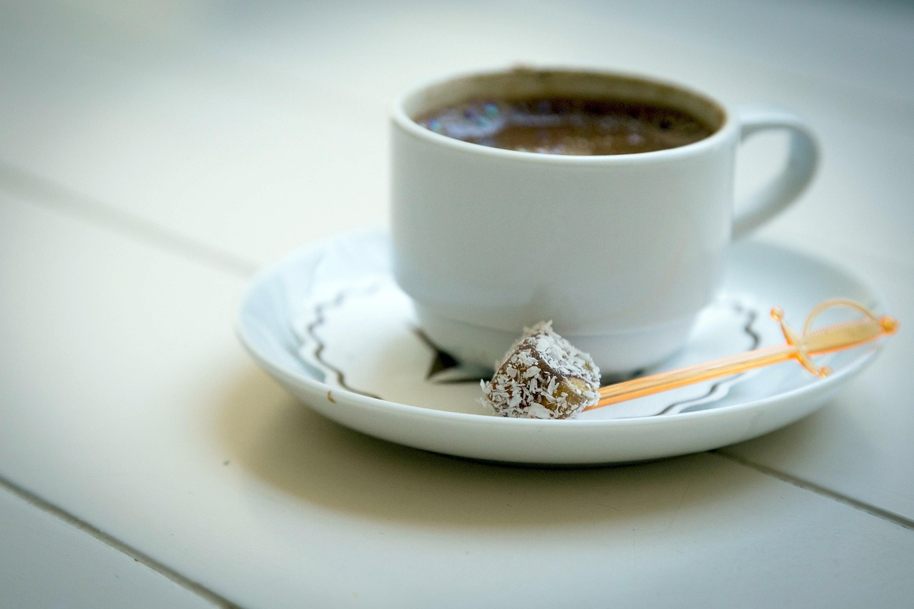

Selamat Datang di Daily Sips
Di dunia yang sibuk dan penuh aktivitas, secangkir kopi atau teh sering menjadi momen kecil yang menenangkan. Sips Daily hadir untuk menemani waktu rehatmu dengan sajian informasi ringan namun bermakna tentang dua minuman yang telah menjadi bagian dari budaya di seluruh dunia.
Mulai dari sejarah kopi dan teh, ragam manfaatnya untuk tubuh dan pikiran, hingga kebiasaan unik dalam menyeduh dan menikmatinya – semuanya kami rangkum secara sederhana namun hangat, layaknya obrolan di meja kedai kopi.
Jelajahi halaman-halaman berikut dan temukan cerita menarik di balik setiap tegukan. Karena bagi kami, setiap seduhan punya kisahnya sendiri.
Artikel Pilihan

Kopi Arabika

Teh Hijau

Portafilter